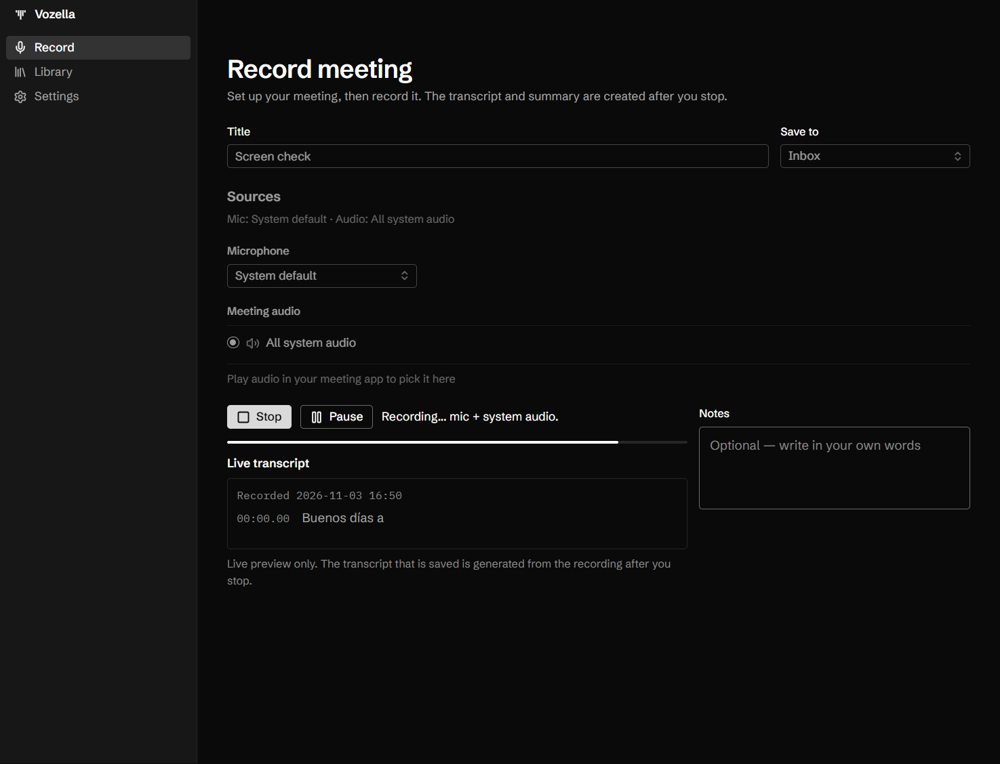

Empecemos por la fecha de lanzamiento.
El día 14 nos da margen para las pruebas.
Entonces cierro la página de precios esta semana.
Yo preparo el anuncio para el blog.
El lanzamiento queda para el día 14. Antes hay que cerrar los precios y preparar el anuncio.
Ana propuso lanzar el día 14. Luis pidió margen para las pruebas.
Lanzar el día 14, después de una semana de pruebas.